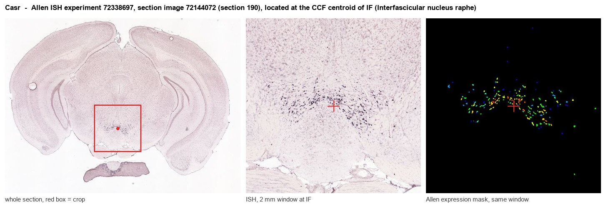

Casr
Extracellular calcium-sensing receptor (CaSR) (Parathyroid cell calcium-sensing receptor) (PCaR1)
Spatial tier: RESTRICTED · Class: GPCR · Top region: IF (Interfascicular nucleus raphe) · Positive regions: 24/554
47.6Discovery Score
39.6Targetability Score
CEvidence grade C
What this means: Casr: fine CCF profile is restricted toward IF (top regions: IF, IPDM, BMAa, MEA, PN; 24 positive regions); direct spatial validation is still required.
Function in IF: evidence, prediction, innovation
- Gene function
- CASR is a class C G-protein-coupled receptor, structurally related to metabotropic glutamate and GABA-B receptors, that functions as a dimer with a large Venus-flytrap extracellular domain. It senses extracellular calcium and is also modulated by magnesium, polyamines and aromatic amino acids, signalling through Gq and Gi. In parathyroid and kidney it governs parathyroid hormone secretion and calcium reabsorption; in neurons it gates non-selective cation channels and modulates transmitter release when extracellular calcium falls during intense activity.
- Region function
- The interfascicular nucleus raphe is a midline midbrain nucleus wedged between the fasciculi retroflexi; it contains dopaminergic neurons continuous with the VTA together with serotonergic raphe cells and projects to medial prefrontal cortex, nucleus accumbens shell and interpeduncular nucleus.
- Published in this region
- inferred No region-specific literature found. CaSR is broadly expressed in rodent brain including midbrain regions (Yano et al. 2004; Ruat & Traiffort 2013), and Mannal et al. 2021 showed that substantia nigra dopamine neurons are highly sensitive to changes in extracellular ionic and glucose conditions, but CaSR function in the interfascicular dopaminergic or serotonergic population has not been examined.
- Predicted function
- Prediction: because sustained burst firing in midline midbrain neurons transiently depletes extracellular calcium in the synaptic cleft, CaSR in the interfascicular nucleus is predicted to act as a local activity sensor that detects this depletion and feeds back to depolarise the neuron and sustain release, effectively a homeostatic amplifier of dopaminergic and serotonergic output to medial prefrontal cortex and accumbens shell. Conditional Casr deletion in Th-Cre or Dat-Cre neurons is predicted to shorten burst duration and reduce accumbal dopamine transients during reward, blunting motivated approach; the calcilytic NPS-2143 infused locally should mimic this, while the calcimimetic R-568 should prolong bursting.
- Innovation
- ★★★★★ 5/5 CaSR has essentially no circuit-level neuroscience literature in the midbrain despite excellent clinical-grade pharmacology in both directions and straightforward dopaminergic Cre access.
- Tools
- Casr floxed mice and Casr-null (rescued) lines; calcimimetics cinacalcet, R-568 and evocalcet; calcilytics NPS-2143 and ronacaleret; anti-CaSR antibodies (clone ADD); Th-Cre, Dat-Cre and Sert-Cre for cell-type restriction in IF; GRAB-DA and GRAB-5HT for terminal readout.
- References
Direct evidence located at the region

Allen ISH experiment 72338697, section image 72144072 (section 190): the section that contains the CCF centroid of Interfascicular nucleus raphe according to the Allen image-to-atlas alignment (reference_to_image), with a 2 mm window around that point. Left: whole section, red box = window. Middle: ISH signal. Right: Allen's expression-mask view of the same window. open this image in the Allen viewer
Look it up yourself: Allen Mouse Brain ISH for CasrAllen reference atlas: IF (structure 12)ABC Atlas MERFISH viewer(in the ABC Atlas choose dataset MERFISH-C57BL6J-638850-CCF, colour cells by gene "Casr" or by parcellation_substructure "IF")All genes confined to IF + 3-D brain
Direct spatial evidence
MERFISH REGION LOCATOR

Regional expression figure

Predicted WMB × fine-CCF profile; not direct full-transcriptome spatial measurement.
Spatial profile
Evidence and specificity
- Evidence status
- PREDICTED_FINE
- Direct sources
- None; predicted localization only
- Exclusive threshold
- 12 positive regions out of 554
- Spatial specificity
- 0.368
- Top-region fraction
- 0.065
- Filter status
- PASS
Interpretation limits
- Cell-type-to-region projection is imputed expression, not direct spatial measurement.
- Adult reference atlases do not establish stability across age, sex, strain, state, or disease.
- Transcript abundance does not guarantee protein abundance or genetic-tool performance.